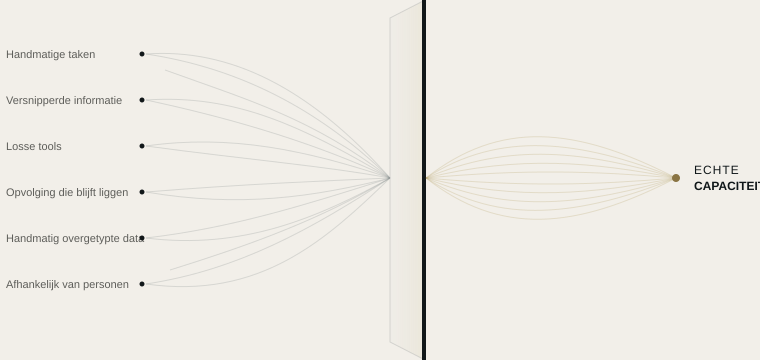

Automatisering
We zetten terugkerende taken om in automatische processen, volgens regels die we samen met jou bepalen.
EERST BEGRIJPEN, DAN VOORSTELLEN
De meeste bedrijven hebben geen extra tools nodig. Ze moeten weten waar hun tijd, informatie en aandacht weglekken.
WAT WE DOEN
We sporen op waar je bedrijf capaciteit verliest en maken die vrij met automatisering, gekoppelde tools en toegepaste kunstmatige intelligentie waar dat zinvol is.

ONZE DIENSTEN
We zetten terugkerende taken om in automatische processen, volgens regels die we samen met jou bepalen.
Voor wat een regel niet oplost: AI versterkt je team, maar vervangt het niet.
We koppelen je tools, zodat informatie van de ene naar de andere gaat zonder dat iemand hoeft in te grijpen.
ONZE AANPAK
We beginnen niet bij een technologie, maar bij een vraag: waar verliest je bedrijf capaciteit, en waarom?
We leren je bedrijf van binnenuit kennen door te kijken hoe je team elke dag werkt.
We brengen in kaart waar tijd, informatie of potentiële klanten verloren gaan, en waarom.
We vertellen je wat we zouden veranderen en wat de moeite niet waard is.
We zetten het op, testen het met jou en stellen het bij tot het werkt zoals je team het nodig heeft.
OM TE BEGINNEN · KOSTELOOS
Je vertelt ons hoe jullie werken en wij wijzen je op één of twee concrete plekken waar tijd of klanten weglekken. Kosteloos en vrijblijvend. Zien we dat het de moeite waard is om verder te gaan, dan stellen we de audit voor.
OM DIEPER TE GAAN
In één week analyseren we hoe je bedrijf werkt en geven we je een helder overzicht: wat capaciteit kost, wat geautomatiseerd kan worden en in welke volgorde. Het rapport is van jou, wat je ook besluit.
Elke werkstroom uitgelegd in heldere taal.
Accounts, tools en data zijn van jou.
Je kunt zien wat elke automatisering heeft gedaan en wanneer.
Als we stoppen met samenwerken, blijft alles van jou.
VOORBEELDEN PER SECTOR
Illustratieve scenario's op basis van alledaagse situaties. We werken met bedrijven uit elke sector, in heel Spanje.
Alles blijft doorlopen, ook als er niemand meer op kantoor is.